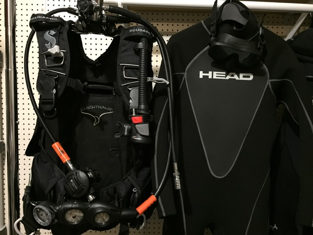

Rental Gear

We have several sets of top-of-the-line scuba gear purchased new in 2015.
- ScubaPro KnightHawk back-inflate BCDs with Air2 octo/inflators
- Apeks XTX50 environmentally sealed, balanced first stage regulators and balanced second stage regulators with breathing resistance adjustment and dive/pre-dive venturi levers
- Complete Suunto instrument consoles with SK-7 dive compasses
- Suunto Zoop wrist-mounted air/nitrox dive computers
- Masks, snorkels, fins and booties in a variety of sizes
- 3mm full wetsuits in a variety of men's and women's sizes
- Lights, spools and SMBs